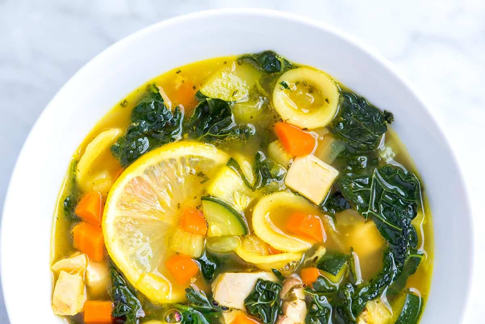

Chicken Vegetable Soup

This lemon chicken and vegetable soup checks all the boxes. It’s hearty, healthy,
satisfying, and tastes incredible. At under 250 calories a serving, it’s healthy,
and since it’s packed to the brim with veggies and chicken, it’s ultra-satisfying.
Ingredients
For The Chicken
- 1 1/2 pounds skin-on chicken thighs
- 1 teaspoon olive oil
- Pinch salt and fresh ground pepper
- 3 to 4 sprigs fresh herbs like thyme, rosemary or sage
For The Soup
- 1 1/2 tablespoons olive oil
- 1 medium onion, chopped, about 1 cup
- 2 medium carrots, chopped, about 1 cup
- 1 medium fennel bulb, core removed and chopped, about 1 1/4 cups
- 2 cloves garlic, minced, about 2 teaspoons
- 1 tablespoon chopped fresh herbs like thyme or rosemary
- 1/2 teaspoon turmeric
- 1 bay leaf
- 7 to 8 cups low-sodium chicken stock
- 1 medium zucchini, chopped, about 1 cup
- 1 bunch kale, stems removed and chopped, about 4 to 5 cups chopped
- 3/4 cup small dried pasta
- Fine sea salt and fresh ground black pepper
- 2 to 3 fresh lemon slices with seeds removed
- Grated parmesan cheese for serving (optional)
Steps
Cook Chicken
-
Heat the oven to 400 degrees F. Line a baking sheet with foil or use a small
oven-safe pan. Make a bed for the chicken with a few sprigs of fresh herbs.
Rub the chicken with the teaspoon of olive oil then lightly season with salt
and pepper.
-
Cook until a thermometer pierced into the thickest part reads 165 degrees F,
25 to 35 minutes. Transfer to a plate and set aside until the chicken is cool
enough to touch. Remove the chicken from the skin and bones then chop into small
pieces.
Make Soup
-
About 10 minutes before the chicken is cooked, make the soup. Place a large
heavy-bottomed pot over medium heat (we use our Dutch oven). Add 1 1/2 tablespoons
of oil along with the onions, carrot, fennel and a pinch of salt. Cook, stirring
occasionally, until the vegetables begin to soften and look glossy, about 10 minutes.
-
Stir in the garlic, herbs and bay leaf and cook for 1 minute. Pour in the stock,
turn up the heat and bring to a very low simmer. When the stock comes to a simmer,
you will likely need to turn the heat down to medium-low to keep it there. Stir in
a 1/2 teaspoon of salt and a generous amount of pepper. Simmer for 20 minutes.
-
Add the zucchini, kale, pasta, and the chopped chicken. If you like, add some or
all of the cooking juices left at the bottom of the pan the chicken was roasted in.
Continue to cook at a low simmer for 10 minutes or until the pasta is al dente.
-
Taste the soup and adjust with more salt — we usually end up adding 1 to 1 1/2
teaspoons total, but this will vary based on the stock you use.
-
Just before serving, drop the lemon slices into the soup. Serve with a little
grated parmesan cheese on top (optional).